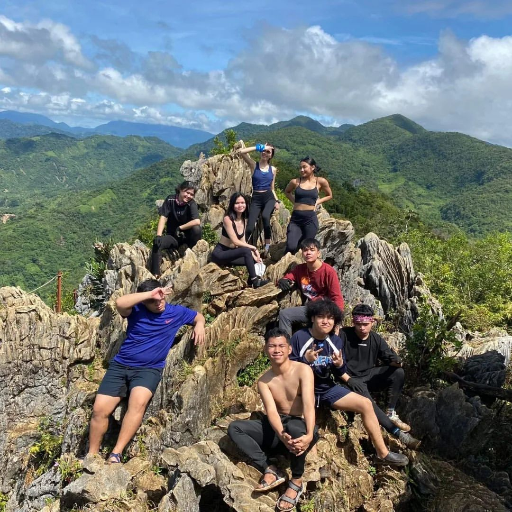

Hiking
16 to 17 March 2022
16 to 17 March 2022
The day our eyes met once more, I felt a pump in my chest that I thought long was gone. In this day, I realized that my heart had been beating for you all this time, despite the passing years and the distance between us. I never could have guessed that it was always you, it was still you, waiting to be found, waiting to reignite the flame that had never truly died. This is the story of how we rediscover each other, and how that chance encounter brought us back to the love we though we had lost forever.
We were thrilled about our upcoming outing, and as a result, we arrived at McDonald's before everyone else. While the others were still preparing their belongings, we decided to hang out at McDonald's, which was our designated meeting place.
Group Picture of Us (Me, Ysma, Vince)
But before anything else, Vince, Ron, and Ysma were already teasing me about you. Although I sometimes played along, I denied any reamining feelings for you since I had moved on by that time. However, I cannot deny that their teasing still bothers me and makes me nervous every time I think about it because I do not want any complications between us. I do not want to be trapped to a box about us anymore.
This time, we are already heading to the summit. But before that,
it was really awkward between the two of us. We didn't even look at
each other, and we just wanted to enjoy our trip. Furthermore, before
we started climbing to the summit, I remember you puttitng a water bottle
in Michelle's bag which I was holding because I said I would carry it.
Then, I joked and said "Ano ba yan ang bigat!" HAHAHA. I said that to
break the awkwardness between us and to make you feel less embarrassed
because I really didn't want things to be awkward between us. But then,
our friends were like, "Yieee", as if they were teasing us. HAHAHA! Then
we started heading to the mountain. LOL.
As we were on our way to the top, I remembered that I was helping almost everyone, but when it came to you, I passed you on to someone else. (LOL) This was not because I didn't want to help you, but because I didn't want to touch you and make things awkward between us. I also didn't know if you wanted me to help you or not, so I rejected the idea of assisting you. (HAHAHA)
note: I aplogize because I didn't have enough photos to all the happenings during the trip. I also don't have enough ideas to anyone who still has photos within this trip. Additionally, I really wanted to keep this as secret as possible so it will be a great surprise for you. Furthermore, I hope you can still appreciate and trigger deep memories from this and recall all the joyful moments we shared on this day.
The summit is so admiring. I remember all the things we talked about in our messenger group chat, particularly about there having a BJ at the top. (AYO?) Chill out because it means Buko Juice. (LOL) I was actually expecting a flat surface where you could look down, however it was still quite rocky and uneven. I also remember you sharing stories about your aunts and her companions getting into arguments because some were slower than others, but thankfully everyone in our group was understanding and there were no fights that happened. (HAHAHA).
Not much happened between us at the top, but it was a great experience and views were stunning. I almost forgot Christian was with us on the trip, but he wasn't in the picture because he couldn't handle it. (HAHAHA).
When we were already going down the mountain, I vividly remember how exhausted we all were. You and Joli were the first ones to arrived the bottom. I really wanted to assist Michelle and Elmo going down because they were having a hard time. So, we paused for a bit but when it was time to go down, I couldn't take my exhaustion any longer. So, I forced myself to push through the head. Kuya kept saying that we were almost there, but we weren't. (HAHAHA) When I finally decided to go down alone, I almost got lost. Thankfully, I asked the locals for directions. I would have been in another village if I hadn't. (LOL)
Anyway, after we all arrived the bottom. I remember everyone was already hungry including me. And as you know, I always try to make jokes to who is ever with me to treat me something. I was jokingly bothering Joli until unexpectedly Joli treated my meal at the eatery we went to. I noticed that you were laughing at me, and notice every move I make. (Hmm.. Crush mo talaga ako eno HAHAHA).
After the eatery, you were inviting me to join you and Joli at the other River, but I declined the offer because I didn't have enough money for fare. Also, I didn't want to join because if I were to, it is just going to be the three of us. There's nothing weird about it though, but I am not that fully comfortable having just the three of us that time. Although, I feel like you really wanted me to come along I declined the offer. I regretted not joing you guys though. (LOL). I saw the pictures and it was amazing.
I have to admit, you and Joli took so long to arrive at the camp. I was already very tired, so I decided to take a nap in the Kubo. I didn't know if I was bothered or just really wanted to see you back. Hays. (I guess I'm really a clown HAHAHA). Anyways, both of you took so long that when I woke up, both of you still haven't arrived. So, I joined our friends at the river in front of our campsite (becuase they were already swimming before I took a nap) and took a dip and played around with them.
After awhile, you guys finally arrived and joined us. We then swam in the deeper part of the lake. This picture was captured by Ysma, and they teased me that I was assisting you or helping you on our way back to the Kubo (which is not true, HAHAHA). They said that it was just the two of us, but you can see in the picture that Joli was also with us, and by the way, I remember as you can see I was wearing your shades. LOL.
I'm laughing so hard at this moment. HAHAHA. This is when we were eating and they grilled hotdogs, but some of them were so burned. The boys were passing around the burned hotdogs and they kept on saying, "Eto pre oh paminta". HAHAHAHA. It's just so funny. (LOL). But the food were so delicious, although I think it could have been more better if it was cooked natural meat with salt in it. I believe it's more delicious without having barbecue sauce in it. (LOL).
I just really wanted to share that moment. Nothing much happened between us though, but it was a memorable and funny experience.
The only thing I remember from this time is that I didn't expect them to make such a strong fire, HAHAHA. So what happened was I kept changing my spot, and at the same time, I felt uncomfortable sitting next to you because you were talking to Vince about something I am not sure of so I kept moving from one place to another. We haven't started drinking hard yet, so nobody was getting drunk and we were just chilling at the spot. But after a while, people started leaving because it was getting too hot, HAHAHA. It wasn't that cold at our campsite in the first place so we weren't really craving that much heat either.
After the campfire, I spent some time in Elmo and Michelle's tent with Joli. You know what we did there, it wasn't that bad though, but I think it's not really appropriate to talk about that here. HAHAHA. Anyway, I don't have an idea where you went after the campfire, I think you and the others started setting up for drinking the hard drinks. Minutes later, I finished my business in the tent with Elmo, Michelle, and Joli I left the tent, then Joli and I joined you guys.
This is where it all started. You were already getting a bit drunk and you were talking to Vince about something that I am not sure what it was about. I wasn't really paying attention, and then I heard about you having issues with our APC friends such as Vega, Zahmer, and the others. As when I looked at you, you were already starting to cry. I was a bit triggered about what you said so I spoke for my intention to help you understand what do our APC friends really feel about you. As I have mentioned, I really wanted to stop having issues between us. So, I started saying. 'Sige, ano ba yung gusto mo malaman? Makikinig ako.' (not the exact words, but something like that). Anyway, that's when the cold night heated. You didn't want to talk about it because at the same time you were already drunk. However, our friends kept instigating and saying we should talk about it to resolve things.
Since I saw you crying, I don't know why but I also started crying too. Maybe because at the same time, even though I was totally moved-on from you. It bothers me to see that you are crying because of something that has happened between us from the past. At that moment, I started having thoughts and getting questions to my head like, I've moved-on, I am already happy, It's been 2 years already, but why does it feel like there's still an issue between us? Why are you crying? Is it my fault? My emotions were mixed up and I didn't know the right reaction, so I cried slowly.
I went up the stairs to relax a bit and I saw Ysma was still awake. I told him to come beside my because I needed someone to talk to. I asked him why do you think it's like that, why is there still and issue even though it's been a long time? Why were you crying? (again, not the exact sentences I said but at least what I remembered talking about). After what happened, Jam suddenly said that you wanted too talk to me. and since I had stopped crying and felt okay again, I was ready to tallk to you.
Honestly, I mostly forgot what we talked about up there. What I mostly remember is that I clarified the issues you were having about what our APC friends think of you. They weren't really angry with you, nor hate you, it's just that during that time they were just supporting me as friend because you moved-on to another guy too quickly. Of course, as every friend would do, they will be mad at someone who do things bad to you when things like that happen, right? Additionally, during that time, maybe they were just taking my side, and as you can see right now, they don't really care about what we do with our lives.
Going back to our conversation upstairs, we have talked about a lot of things. As more time goes by, we were feeling more comfortable with each other. Honestly, maybe it's a bit of my fault for being kind of annoying and teasing you about Valorant, because the more I talked to you about it, we're becoming more at ease and comfortable with each other.
I don't know how to put all the things we talked about in detail, but we talked
for a long time in the Kubo until we became okay with each other and resolved
the issues that needed to be resolved.
After talking for I gues an hour in the Kubo, I went back down to the bottom to relax. I puffed my Sauna to relax a bit more. Then, I joined Vince and had a little more to drink while they are talking with each other. That was the time I was talking about when I couldn't stop laughing at Xtian because he was staring at a blank space for about 10 minutes saying nothing and suddenly blurted out that he didn't deserve Tonette. That's when it all started, those days when Xtian started saying that he thinks he want to break up with his girlfriend Tonette.
After everything that happened, we're finally okay and I was able to sleep soundly, thanks to the alcohol and "Sauna" that I had with me. Hahaha.
In the morning, I woke up feeling great next to Ysmael and Vince, although I can't remember how I woke up. It was cold since the sun isn't peeking at the clouds yet, so it was nice to snuggle under the blankets because it was cold like we were inside an air-conditioned room. However, the two idiots beside me were already being silly and joking around, even though it was still early in the morning.
Eventually, the weather got warmer and everone started getting up. Before heading home, we had lunch to finish up the remaining food. Some of us, including me, also took a dip in the river before leaving.
There was nothing much that happened between us, and we didn't really talk much since I wondered if you still even rememberedd our consversation from the previous night because you got drunked. So, I just went about doing what I wanted to do that day.
Before going home, I remembered that Elmo's car window was broken and the plan was for all the girls to ride in Elmo's car. However, Jam and Ron wanted to ride together, so they ended up riding in Elmo's car instead. So, both of you and Joli ended up riding in Xtian's car with us.
What I remember most before we went home was when you got into the car, we all thought you would let Joli ride first so you wouldn't have to sit beside me, but you went ahead and got in first, so we ended up sitting beside each other. Although, it wasn't really a problem for me, people were thinking at that time that you had a boyfriend and everything between us was already resolved last night, so it would be better if we didn't fool around with each other again.
However, both of us were still silly with each other. Although I can't just blame only you because I at the same time were also trying to joke around with you. At that time, I didn't really care and I didn't consider anything. I was just trying to be myself and I only care about my self. Hahaha. So, we started talking about KDrama that you guys have watched and I was also borrowing Joli's "Sauna" so all the stories we were talking about were mixed-up. At some time, we were trying to joke around and being silly with each other and I didn't know if that was right or wrong because we had a heavy past between us and you had a boyfriend that time. So, I guess we should have focused on trying to be separated even though everything was already resolved between us. However, maybe it was just meant to happen. (HAHAHA).
As time passed by, everyone got hungry and maybe the people weren't ready to go home yet because we were still enjoying ourselves at the moment. So, we all decided to look for a place to eat first, and we endedup stayiing at Mang Inasal.
Honestly, the most memorable thing that only happened to us in the car was the numerous KDrama suggestions you gave me, which I haven't watched all of it until now. Hahaha. Then, I wrote them down on my Samsung notes and labled them as Legendary. Hahaha.
After eating, we finally decided to go straight home, so riding after an hour, we finally arrived in Betterliving and everyone startedd to go home ony by one. I was already so tired, so I didn't get off at Sinangag Express and got off at Puregold instead. Hahaha. Although, I remember you were reminding me to watch all the KDramas you suggested and told me to send both of you and Joli a reaction after watching. Furthermore, after leaving, everyone went home happily.
Although, that was all the summary that happened on our Hiking Trip, it is just the introduction on on how our story started.
This day was the first date we had after our break-up. One of the most memorable dates we ever had.
Although there was nothing much that happened in this day, being with you makes it special.
I was from school and we met each other in SM Bicutan before going home. Another day well spent with you.